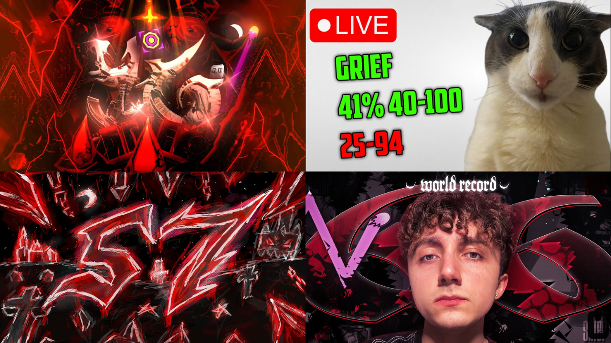

Jogadores disputam a primeira conclusão de GRIEF após novos recordes
Trick, wPopoff, Zoink e dewbbs registram progressos expressivos no nível que ocupa o topo da Demonlist, enquanto runs avançadas ampliam a disputa pela primeira vitória.

A corrida pela primeira conclusão de GRIEF, atual nível mais difícil da Demonlist, segue movimentando a comunidade de Geometry Dash. Pouco mais de uma semana após a publicação do nível, diferentes jogadores já registraram recordes expressivos, incluindo porcentagens elevadas a partir do início e runs que cobrem grande parte de sua extensão.
Entre os principais nomes da disputa estão Trick, wPopoff, Zoink e dewbbs. Os jogadores apresentam progressos distintos, tanto em recordes individuais quanto em tentativas que começam em pontos intermediários do nível. A combinação desses resultados dificulta determinar qual deles está mais próximo de alcançar os 100%.
Progresso dos principais competidores
Trick alcançou 66% em GRIEF, tornando-se o primeiro jogador, além do verificador Doggie, a chegar à parte conhecida como Greafer durante a tentativa de conclusão da versão publicada do nível. O jogador também possui uma run de 49–100%, demonstrando que já conseguiu conectar uma parte significativa do trecho final.
wPopoff, por sua vez, chegou a 57% em GRIEF no dia 13 de outubro. Além do recorde a partir do início, o jogador conseguiu uma run de 56–100%, cobrindo praticamente toda a segunda metade do nível em uma única tentativa.
O resultado ganhou destaque na comunidade porque wPopoff teria realizado pouca ou nenhuma prática prévia significativa na versão de GRIEF utilizada na disputa, embora a extensão exata dessa preparação seja discutida pelos jogadores.
Zoink também acumula resultados relevantes. Seu recorde a partir do início é de 47%, acompanhado de uma run de 25–94% e outra de 40–100%. Os resultados indicam que o jogador já conseguiu avançar por diferentes seções do nível, incluindo uma tentativa que alcançou o final.
Já dewbbs alcançou 46% a partir do início, além de registrar runs como 26–69%, 35–91% e 49–100%. Seu histórico de prática também é relevante: antes da publicação da versão atual, o jogador já havia dedicado tempo considerável a versões anteriores de GRIEF, acumulando dezenas de milhares de tentativas.
Comparação dos resultados
Os dados disponíveis em 14 de outubro mostram diferenças importantes entre os competidores. A porcentagem máxima a partir do início favorece Trick, enquanto as runs intermediárias demonstram que os demais jogadores também possuem trechos extensos do nível consolidados.
Esses números não representam necessariamente o nível de consistência de cada jogador em todas as partes. Uma run iniciada em uma porcentagem intermediária não equivale a completar o nível desde 0%, mas fornece uma referência sobre quais seções já foram conectadas em uma mesma tentativa.
Além disso, a preparação prévia é uma variável importante. Alguns participantes já haviam praticado versões anteriores de GRIEF antes de sua verificação, enquanto outros tiveram menos contato antecipado com o desafio. Por isso, comparar apenas as porcentagens não oferece uma medida completa do desempenho de cada competidor.
Outros jogadores também apresentam progresso
A disputa não está limitada aos quatro nomes mais destacados. Slaylarius também registrou resultados expressivos, incluindo 41% a partir do início, runs de 11–69% e 25–94%, além de uma tentativa de 44–100%.
Outros participantes, como Jonah, Diamond e Cursed, também aparecem nos registros da comunidade com progressos em diferentes trechos do nível. Embora suas marcas sejam menos avançadas em porcentagem a partir do início, as runs intermediárias mostram que a disputa reúne mais jogadores do que apenas aqueles que lideram os recordes individuais.
O acompanhamento desses resultados pode ser feito pelo ranking comunitário de GRIEF no Reddit.
GRIEF ocupa o topo da Demonlist
GRIEF foi verificado por Doggie e publicado em 5 de outubro de 2026, entrando diretamente na primeira posição da Demonlist e superando Society. O nível é uma megacolaboração de dificuldade Extreme Demon, com duração aproximada de 2 minutos e 46 segundos.
A verificação foi concluída após aproximadamente 436.879 tentativas de Doggie, encerrando um longo processo de preparação. O lançamento provocou uma grande reação da comunidade, com aumento expressivo de tráfego em serviços relacionados a Geometry Dash.
A dificuldade e a extensão do nível ajudam a explicar por que a corrida pela primeira conclusão envolve tanto porcentagens elevadas quanto runs que conectam grandes partes do percurso.
A disputa continua aberta
Com Trick, wPopoff, Zoink e dewbbs acumulando resultados relevantes, ainda não é possível determinar quem conquistará a primeira conclusão de GRIEF. O recorde de 66% de Trick é a maior porcentagem individual entre os jogadores destacados, mas as runs de Zoink, wPopoff e dewbbs demonstram que diferentes partes do nível já foram superadas em tentativas extensas.
A evolução da disputa dependerá da capacidade de cada jogador de combinar esses progressos e concluir o desafio a partir do início. Até que alguém alcance os 100% na versão publicada, a corrida pela primeira vitória de GRIEF permanece aberta.
- Reddit — Ranking comunitario de GRIEF
- YouTube — Trick
- YouTube — wPopoff
- YouTube — Zoink
- YouTube — dewbbs.